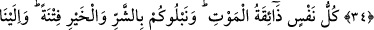

HER CANLI
ÖLÜMÜ TADAR
34. Biz, senden önce de hiçbir beşere ebedîlik vermedik. Şimdi sen ölürsen, sanki
onlar ebedî mi kalacaklar?
35. Her canlı, ölümü tadar. Bir deneme olarak sizi hayırla da, şerle de imtihan
ederiz. Ve siz, ancak bize döndürüleceksiniz.
“Biz, senden önce de hiçbir beşere ebedîlik vermedik.” “
” ve “
” aslında
cildin dışı demektir. Diğer canlıların aksine derisi göründüğü için insana ‘beşer’
denilmiştir. Hayvanların derileri yün, kıl ya da tüylerle kaplıdır.
“
” bir şeyin bozulmaya uğramaktan uzak olması ve bulunduğu hâl üzere
kalmasıdır.
Bu âyet müşriklerin Rasûlullah (s.a.) hakkında “Onun, zamânın felâketlerine
uğramasını bekliyoruz.” (et-Tûr, 52/30) dedikleri vakit nâzil olmuştur. (Kâfir ve
müşrikler dediler ki): Zaman kasırgasının ortaya çıkmasını, Hz. Muhammed (a.s.)’in
dostlarını dağıtmasını ve onu helâk çukuruna atmasını bekleriz. Yâni O’na bir kötülük
isâbet etmesini ya da başına, kendisini ölüme götürecek hâdiseler gelmesini bekliyoruz.
Çünkü “raybe’l-menûn” zamânın hâdiselerinden helâk edici bir felâketler demektir.
Bu durumda açıklamakta olduğumuz âyetin mânâsı şöyledir: “Ey Muhammed, senden
önce insanlardan hiçbir ferdin dünya hayatını devamlı (bâkî) kılmadık. Yâni
Âdemoğullarının dünya hayatını ebedî kılmak bizim âdetimiz değildir. Her ne kadar biz
bunu yapmaya, bir insanın dünya hayatını ebedî kılmaya kadir olsak da böyle bir
ayrıcalığı hiç kimseye tanımadık. Herkese ölümü tattırdık.
İşin aslı böyle olduğuna göre: “Şimdi sen ölürsen, sanki onlar” bizim kudretimizle
dünyada “ebedî mi kalacaklar?” Hayır. Aksine sen de, onlar da (hepiniz) âdetimiz
olduğu üzere öleceksiniz. Bunun delili de “Sen de öleceksin, onlar da ölecekler.” (ez-
Zümer 39/30) âyetidir. Yâni onlar, senin ve sana bağlı olanların ölümünü
beklemektedir.
Sanki âyette şöyle buyrulmaktadır: “Şimdi sen ölsen, bu müşrikler dünyada ebedî mi
kalacaklar ki senin öleceğine seviniyorlar?” Nitekim şâir şöyle der:
Bize gülenlere söyle uyanık olsunlar,